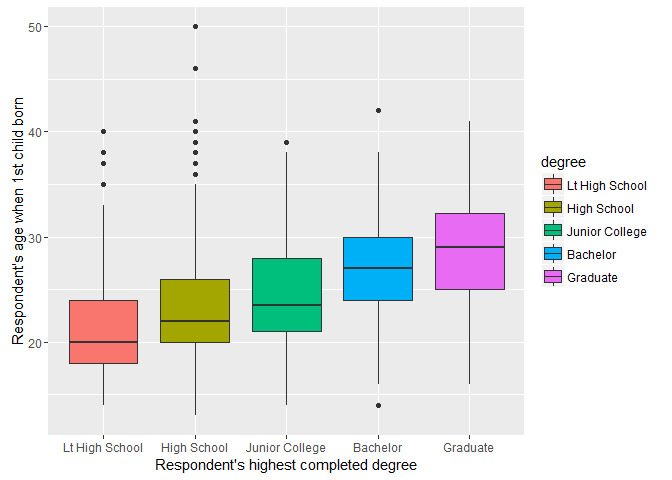
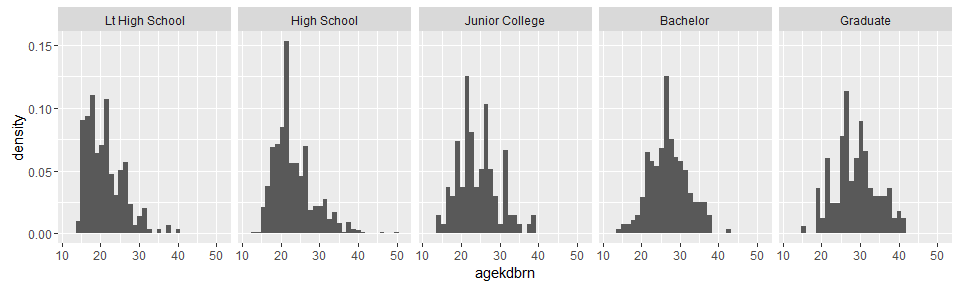
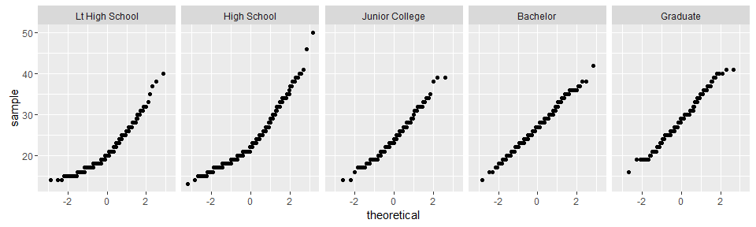

2 November 2015
In this project report the aim is to investigate the following research question:
Is there a relationship between the highest education degree and age when first child is born for US residents?
It is a common belief that people who complete higher education get children when they're older than people who "only" complete High School. But, is it in fact so? It might be a belief that is primarily due to people's own experience or perhaps even prejudice. In this project report we will use data from the US General Social Survey (GSS) to investigate whether there actually exists a significant difference or if it is just a common misconception.
The data used is from GSS data set. The data in the GSS is collected via in-person interviews with respondents of approximately 90 minutes [1]. The dataset used in this study is the Coursera abstract of the GSS, available here, which consists of survey data from 1972 until 2012. It has 50761 rows, which correspond to respondents (i.e. the cases), and 114 columns, which correspond to the answers given by the respondents to the survey questions.
The variables used in this study are called 'degree' (categorical variable, 5 levels) and 'agekdbrn' (numerical variable). In addition to these two variables, the variable 'childs' (numerical variable) to determine if NA's in agekdbrn might be due to having 0 children (to include the category 0 children might create a broader and more interesting scope than just age of those who have children). Only data from 2012 will be used in this study.
The population of interest is the overall US population. The GSS is designed to be able to answer questions for the US population based on the samples, whether it is for comparing trends over time or intrayear comparisons. There might be biases related to, e.g.: participation in the survey (being volunteer, having access to telephone etc.), geography (are the responders well distributed throughout the US?), sociology (are people from all social backgrounds and classes included in proportions similar to the US population?). Hopefully the GSS is created by professional statisticians that deliberately aim to reduce the chance for such biases occuring, so that the results from this study will have little bias.
This is an observational study, as the data is collected without interfering with how the data has arised, the data is retrospective, and there is no randomly assigning of subjects to treatments.
Since this is will be an observational study, it is in itself limited to establishing association between variables and not causality. If a significant relationship between degree and age of first child is found, one could start speculating on causal relationship, but it should be clearly stated that it is speculation (unless potential further studies are conducted). For instance, one might argue that "being able to combine higher studies and providing for a child is difficult", but not determine whether it was because someone got a child at a young age that they didn't complete higher education or, the other way around, didn't get a child because he/she were taking higher education.
First, we want to subset the variables of interest and for the appropriate year. We then take a look at it with head, and discover that agkdbrn contain NA's - the data needs some cleaning before it can be used for analysis. To investigate what that might be we check if the number of NA's in agkdbrn corresponds to the number of respondents in childs that say they have no children (childs=0). We find that the number is almost similar (544 vs. 536), which justifies removing all NA's from the data that will be used in the study.
r
df <- subset(gss, year == 2012, select = c(degree, agekdbrn, childs)) # Create subset o
head(df)
```
```
r
sum(is.na(df$agekdbrn))
```
```
r
table(df$childs)
```
```
r
df_tidy <- na.omit(df[ , c('degree', 'agekdbrn')])
str(df_tidy)
```
```
The tidy data frame has 1423 cases of the variables degree and agekdbrn. Now we would like to calculate some summary statistics for it:
r
library(dplyr); library(knitr)
by_degree <- group_by(df_tidy, degree)
stats <- data.frame(summarize(by_degree, mean(agekdbrn), median(agekdbrn), sd(agekdbrn), length(agekdbrn)))
stats$degree <- NULL # Removing degree column
stats <- t(stats)
colnames(stats) = levels(by_degree$degree); rownames(stats) = c('Mean', 'Median', 'SD', 'Sample size')
kable(stats, digits = 2)
Lt High School High School Junior College Bachelor Graduate
Mean 21.10 23.22 24.43 27.07 28.74 Median 20.00 22.00 23.50 27.00 29.00 SD 4.74 5.22 5.31 4.89 5.48 Sample size 242.00 709.00 110.00 226.00 136.00
From the table it seems like there is a clear trend of increasing mean age for first child born with highest educational degree completed. A boxplot of the data also indicate this:
r
library(ggplot2)
```
```
r
p <- ggplot(df_tidy, aes(degree, agekdbrn))
p + geom_boxplot((aes(fill = degree))) + labs(x="Respondent's highest completed degree", y="Respondent's age when 1st child born")

From the table and the boxplot it seems like there is a quite strong correlation between age when first child is born and highest educational degree completed. But, we need to perform some statistical analysis of the data before we be conclude that this is the case.
Considering the variables we have in this study - a categorical with 5 levels and one numerical - it seems that analysis of variation (ANOVA) and, potentially, pairwise tests are the most appropriate statistical techniques to use.
In order to use ANOVA we need to check that the following criteria are met:
To easiest way to check for normality is probably to draw the histograms of the distributions (within each group) and their corresponding normal probability plots:
 
From the plots it seems like there is a trend towards normality from left to right (Lt High School to Graduate). To my judgment, all distributions look sufficently normal when considering the large (>100) sample sizes except for Lt High School, which is quite heavily right skewed and the normality plot is not very straight. On the other side, the sample size is pretty large (242), which can make up for some of the skewness. I am not completely certain that this group actually meets the normality criteria, but for the sake of this study we assume it does and can hence continue with the analysis of variation.
It should be noted that there are some outliers in the High School group, but they don't seem to "distort" the distribution, or affect summary statistics, significantly.
We continue with the analysis of variation, where the following hypthesis test is used:
$H0: \mu{LHS}=\mu{HS}=\mu{JC}=\mu{Bachelor}=\mu{Graduate}$
$H_a:$ At least one pair of means are different from each other
r
fit <- aov(agekdbrn ~ degree, data=df_tidy)
summary(fit)
```
```
We can see that the resulting p-value from the F distribution is close to zero (<2e-16), which indicates that there is very likely a relationship between age when first child is born and highest educational degree.
We can furthere check if there is significance between all educational levels, with two sample t-tests. We choose to investigate the following two two sample t-tests:
We need to calculate new significance level, by using the Bonferroni correction. This is make sure that/reduce the chance for a significant finding is not due to randomne patterns in the overall data. Significance level used in the ANOVA analysis: 0.05.
```r k = length(levels(dftidy$degree)) comparisoncount = k * (k - 1) / 2 sigleveladj = 0.05 / comparisoncount gd <- dftidy[dftidy$degree == "Graduate", ] lhs <- dftidy[df_tidy$degree == "Lt High School", ] hs <- dftidy[dftidy$degree == "High School", ] jc <- dftidy[dftidy$degree == "Junior College", ]
sigleveladj # New significance level ```
```
```
r
t.test(gd$agekdbrn, lhs$agekdbrn)
```
```
r
t.test(jc$agekdbrn, hs$agekdbrn)
```
```
From the results we can see that there is a significant difference between the max and min means (p-value = <2.2e-16, which is much smaller than 0.005) and that there is no significant difference between High School and Junior College (p-value = 0.028, which is higher than 0.005).
The results of the ANOVA analysis suggest a strong relationship between age when first child is born and highest completed educational degree. The age seem to increase with educational degree, and significantly so. The resulting p-value is so low that even the most stringent significance criteria is met.
On the other hand, however, the multiple comparison tests performed indicate that it is not necessarily a significant difference between all levels of highest completed educational degree.
http://thearda.com/archive/files/descriptions/gss12pan.asp
Smith, Tom W., Michael Hout, and Peter V. Marsden. General Social Survey, 1972-2012 [Cumulative File]. ICPSR34802-v1. Storrs, CT: Roper Center for Public Opinion Research, University of Connecticut /Ann Arbor, MI: Inter-university Consortium for Political and Social Research [distributors], 2013-09-11. doi:10.3886/ICPSR34802.v1
The codebook below lists all variables, the values they take, and the survey questions associated with them. It is available here: https://d396qusza40orc.cloudfront.net/statistics%2Fproject%2Fgss1.html
Link to the data set: http://bit.ly/dasianesdata
r
head(df_tidy, 50)
```
```